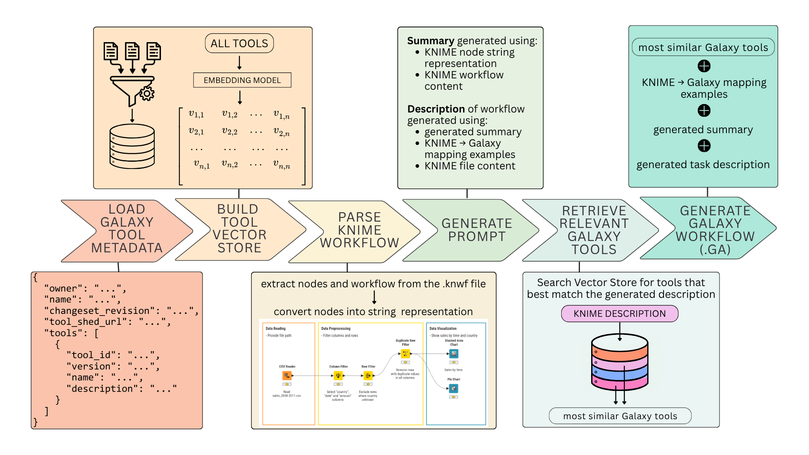

Workflow translation for bioimaging
KNIME2Galaxy Workflow Translator
Convert KNIME workflows into valid Galaxy workflows using embedding-based tool retrieval and LLM-guided reconstruction.

From one ecosystem to another
How the translator works
The translator combines workflow structure, Galaxy tool metadata, and model-guided matching to produce an importable Galaxy workflow.
-
01
Read the workflow
Unpack the KNIME archive and inspect its nodes, including nested subnodes.
-
02
Match Galaxy tools
Retrieve suitable Galaxy tools from metadata using semantic similarity.
-
03
Build and validate
Reconstruct the workflow as a Galaxy
.gafile ready for validation and import.
Continue exploring